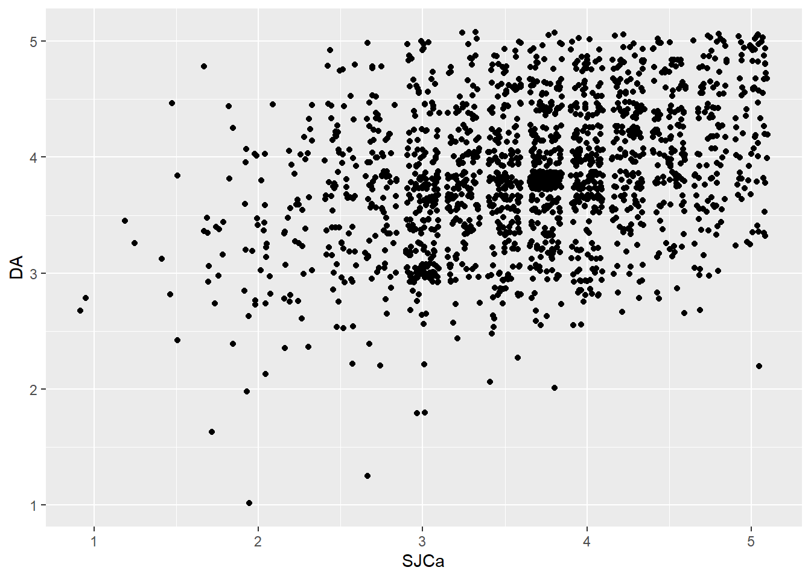

Chapter4 Week 4: Assumptions and Correlations
This week we will be discussing Chapters 5 and 6 from DSUR. These notes will pull out some of the important pieces from each chapter.
4.1 Assumptions
These assumptions that we are making are helpful when determining whether we should be using parametric vs non-parametric statistical tests. What does “parametric” mean here? It means that the data are from a parameterized distribution (i.e., parameters characterize the distribution that the data come from). An example of a parameterized distribution that we have already seen is the normal distribution. The two parameters for the normal distribution are \(\mu\) for the mean and \(\sigma\) for the standard deviation. We have seen this altogether with this kind of notation to denote that \(x_i\) is from a normal distribution:
\(x_i \sim \mathcal{N} (\mu, \,\sigma^{2})\)
4.1.1 Normally distributed data
This assumption is about the normality of the sampling distribution. The big idea here is that we tend to operate under the belief that if our sampled data are normally distributed then the underlying sampling distribution is also normally distributed. Also, keep in mind that this becomes less of a concern as our sample size increases (thank, Central Limit Theorem!).
There are several tests for normality that we will discuss, which include either (a) calculations or (b) visual examination. We will discuss both.
4.1.1.1 Visual check of normality
You can accomplish this with a histogram (e.g., hist() or geom_histogram() or a q-q plot qplot() (which stands for quantile-quantile).
4.1.2 Homogeneity of variance
Here, you want to know whether the variance of a variable is the same across different groups. For example, if you are looking at test scores in chemistry and chemical engineering students, you want to know if the variances (spread) of the test scores in the chemistry group and the chemical engineering group are close to each other.
4.1.3 Interval data
This might be a little redundant given that we want normally distributed data, but you want at least interval data (ratio data are also fine, but in practice very few things we work with actually qualify as ratio variables). If you have ordinal or nominal variables, you might be in trouble with this assumption…
4.1.4 Independence
This assumption is about the observations not being related to each other or affecting each other in some way. In practice, this can also be a little tricky. For example, if you are sampling students from different classrooms, depending on the variables you are measuring, you might actually have reason to believe that students in one classroom are more related to each other than students in a different classroom. In practice, you can handle this with a multi-level model (aka hierarchical model), but that is beyond the scope of this class.
4.2 Correlation
4.2.1 Covariance
First, start with the observation that variance is calculated with: \(Variance(s^2) = \frac{\sum(x_i - \overline{x})^2}{N - 1} = \frac{\sum(x_i - \overline{x})(x_i - \overline{x})}{N - 1}\)
But now let’s say that we want to know how, for each observation we have, how does the value of \(x\) vary with the value of \(y\) on average. For example, when the value of \(x\) increases, does the value of \(y\) also increase? This could happen when \(x\) represents the number of hours of sleep you get each night and \(y\) is your average grade on an exam you take the next day. The opposite could arise when \(x\) increases but we expect \(y\) to go down. An example of this might be when \(x\) is the number of hilarious jokes that a teacher tells in class and \(y\) is the number of students who fall asleep in class. As the number of jokes increases, we might expect/hope that it keeps students’ attention and keeps them from dozing. This generally process of considering how one variable changes when another variable changes is where the notion of covariance comes in.
In practice, what we really want to know is: when \(x_i\) is above its average value in a sample (\(\overline{x}\)), how does \(y_i\) change? Does it also tend to be above the sample average for \(y\) (\(\overline{y}\))? This is expressed in the general formular for covariance:
\(cov(x,y) = \frac{\sum(x_i - \overline{x})(y_i - \overline{y})}{N - 1}\)
While covariance can be a helpful value to work with in many settings, for most of what we do in this class, we will be using correlation coefficients instead of covariance. This is because covariance is an unnormalized value, which can make comparisons across different ranges of values difficult.
4.2.2 Correlation coefficient
In order to standardize the covariance to a value the is easier to work with across ranges of values, we use the correlatoin coefficient. There are several version of this, depending on the type of data you are working with. The most basic version is the Pearson correlation coefficient. It is calculated by dividing the covariance by the standard deviations of your two variables of interest:
\(r = \frac{cov_{xy}}{s_xs_y} = \frac{\sum(x_i - \overline{x})(y_i - \overline{y})}{(N-1)s_xs_y}\)
This is a bivariate correlation coefficient because it is looking at the correlation between two variables. There are also partial correlation coefficients, which look at the correlation between two variables whil controlling for other variables.
We can calculate the correlatoin between two variables using the cor() or cor.test() functions, which are part of base R.
4.3 Another worked example for cleaning and prelim analysis
This script takes an incomplete subset of senior data from a .csv file, cleans it, computes factor scores, and prepares it for analysis.
If you have not already done so, make sure that you have run library(tidyverse) and library(psych) since we will be using functions from both of those packages.
4.3.1 Loading in data
First, as usual, load in your data. We will use the file seniorsurvey.csv for this demo.
file_path <- "YOUR PATH HERE"
setwd(file_path) use this command to change the working directory to the folder where you have your file
list.files() run this to make sure that your file is in your current working directory
seniorSurvey_df <- read_csv("seniorsurvey.csv") # replace text in the parentheses with your file name## Parsed with column specification:
## cols(
## .default = col_double()
## )## See spec(...) for full column specifications.4.3.2 Data prep and cleaning
After loading, it is always nice to just see how things loaded in. Functions like str() and describe() from the psych package are nice for this. For example, if we use describe(), we can see the following (we deleted some variables):
psych::describe(seniorSurvey_df)## vars n mean sd median
## What is your PRIMARY MAJOR? 1 1849 31.79 20.43 29
## Internship, field experience, co-op, or practicum 2 1121 1.00 0.00 1
## ParticipateServiceL 3 489 1.00 0.00 1
## ParticipateCService 4 1296 1.00 0.00 1
## ParticipateStudyAbroadSemester 5 142 1.00 0.00 1
## SJ1 6 1733 2.32 1.03 2
## SJ2 7 1732 2.08 0.96 2
## SJ3 8 1731 2.77 0.88 3
## SJ4 9 1726 2.27 1.01 2
## SJ5 10 1728 3.27 0.92 3
## SJ6 11 1719 3.50 0.83 4
## SJ7 12 1719 4.01 0.79 4
## SJ8 13 1719 4.15 0.83 4
## DA1 14 1719 2.23 0.93 2
## DA2 15 1719 2.86 0.95 3
## DA3 16 1720 1.97 0.81 2
## DA4 17 1721 4.20 0.72 4
## DA5 18 1721 4.06 0.81 4
## LocalRole 19 1453 3.49 0.94 4
## LocalFinance 20 1453 3.22 0.90 3
## LocalTime 21 1453 3.58 0.89 4
## GlobalRole 22 1446 3.57 0.99 4
## GlobalFinance 23 1449 3.19 1.00 3
## GlobalTime 24 1449 3.42 0.98 3
## Your gender? 25 1678 1.49 0.50 1
## trimmed mad min max range
## What is your PRIMARY MAJOR? 31.25 28.17 1 70 69
## Internship, field experience, co-op, or practicum 1.00 0.00 1 1 0
## ParticipateServiceL 1.00 0.00 1 1 0
## ParticipateCService 1.00 0.00 1 1 0
## ParticipateStudyAbroadSemester 1.00 0.00 1 1 0
## SJ1 2.25 1.48 1 5 4
## SJ2 1.98 1.48 1 5 4
## SJ3 2.79 1.48 1 5 4
## SJ4 2.20 1.48 1 5 4
## SJ5 3.27 1.48 1 5 4
## SJ6 3.54 1.48 1 5 4
## SJ7 4.07 0.00 1 5 4
## SJ8 4.23 1.48 1 5 4
## DA1 2.15 1.48 1 5 4
## DA2 2.89 1.48 1 5 4
## DA3 1.90 0.00 1 5 4
## DA4 4.27 1.48 1 5 4
## DA5 4.11 1.48 1 5 4
## LocalRole 3.51 1.48 1 5 4
## LocalFinance 3.23 1.48 1 5 4
## LocalTime 3.63 1.48 1 5 4
## GlobalRole 3.62 1.48 1 5 4
## GlobalFinance 3.18 1.48 1 5 4
## GlobalTime 3.44 1.48 1 5 4
## Your gender? 1.49 0.00 1 2 1
## skew kurtosis se
## What is your PRIMARY MAJOR? 0.18 -1.33 0.48
## Internship, field experience, co-op, or practicum NaN NaN 0.00
## ParticipateServiceL NaN NaN 0.00
## ParticipateCService NaN NaN 0.00
## ParticipateStudyAbroadSemester NaN NaN 0.00
## SJ1 0.46 -0.51 0.02
## SJ2 0.64 -0.16 0.02
## SJ3 -0.03 -0.14 0.02
## SJ4 0.52 -0.40 0.02
## SJ5 -0.19 -0.03 0.02
## SJ6 -0.40 0.15 0.02
## SJ7 -0.75 1.05 0.02
## SJ8 -0.86 0.69 0.02
## DA1 0.57 -0.11 0.02
## DA2 -0.09 -0.41 0.02
## DA3 0.70 0.31 0.02
## DA4 -0.66 0.54 0.02
## DA5 -0.59 0.16 0.02
## LocalRole -0.44 -0.33 0.02
## LocalFinance -0.19 -0.27 0.02
## LocalTime -0.59 0.22 0.02
## GlobalRole -0.47 -0.30 0.03
## GlobalFinance -0.11 -0.33 0.03
## GlobalTime -0.35 -0.17 0.03
## Your gender? 0.03 -2.00 0.01Upon examining this, we can notice a few things: Primary Major variable is all messed up. We won’t fix it here, but basically there is a numeric code needed (e.g., 13 = underwater basket weaving)
Columns 3 and 5 have lots of missing values (note the small N’s) – this means that this was asked via checkbox so (1) is true and missing is not missing but False
SJ1-8 and DA1-5 all look essentially ok – about the same N (some survey fatigue or skips) but all values in range (1-5)
Now, we know that SJ and DA are scales from the literature and we want to compute scale scores for those. Typically for attitude scales like these we just report means across the items. So, we will use the “psych” package to use a built in function to help us with this. If you have not used psych yet, be sure it is installed using the command install.packages(“psych”) – you need only do this once and then in subsequent uses you only need library(psych) to tell R to look in that package for the functions you will be using.
library(psych)Subset out only the SJ and DA items in their own dataframe and then use tools in the psych package to compute scale means
The first method to do this - use numbering of the columns:
seniorSurveyScales_df <- seniorSurvey_df[6:18]A second method to do this - use select() from dplyr
seniorSurveyScales_df <- seniorSurvey_df %>% select(SJ1:DA5)Use the make.keys() function from psych package to key-in how the scales are built (mapping items to scales, use - for reverse scored items)
my_keys <- make.keys(seniorSurveyScales_df, list(SJCa=c(-1,-2,-3,-4),SJCh=c(5,6,7),DA=c(-9,-10,-11,12,13)))Use scoreItems function to score each respondent on the three scales of interest SJCa, SJCh, and DA – the default here in scoreItems is to takes the mean of the items (not additive though that is sometimes used) and also, it imputes missing values instead of dropping cases the scoreItems function calculates many things. At this stage, all we really want are the scores, so we include a line to only extract that info.
my_scales <- scoreItems(my_keys, seniorSurveyScales_df)
my_scores <- my_scales$scoresNow, if you view the first few rows of the my.scores vector using the header – head() command – it looks like we expect:
head(my_scores)## SJCa SJCh DA
## [1,] 2.75 3.000000 3.2
## [2,] 3.75 3.333333 4.2
## [3,] 3.00 3.000000 3.0
## [4,] 2.25 4.333333 3.6
## [5,] 3.00 3.333333 3.4
## [6,] 4.50 4.333333 3.4Now, let’s build a clean dataframe to prep for analysis - by clean in this case I mean that we have replaced item scores from the scales with their means and also that we have fixed the NAs that don’t belong (for participation variables, in this dataset, the NAs should be 0s)
my_df <- data.frame(seniorSurvey_df[1:5],my_scores, seniorSurvey_df[19:25])This is an old school method to replace NAs in specific columns
my_df$ParticipateServiceL[is.na(my_df$ParticipateServiceL)] <- 0
my_df$ParticipateCService[is.na(my_df$ParticipateCService)] <- 0
my_df$ParticipateStudyAbroadSemester[is.na(my_df$ParticipateStudyAbroadSemester)] <- 0 my_df\(ParticipateInternCoop...[is.na(mydf\)ParticipateInternCoop…)] <- 0 ——- this variable read in cumbersomely named and I don’t care about it right now so I’ll skip
Here is An alternative method to replace NAs in specific columns:
my_df <- my_df %>%
replace_na(list(ParticipateCService = 0, ParticipateStudyAbroadSemester = 0, ParticipateServiceL = 0))4.3.3 Preliminary analysis
At this point, we are ready for some analysis
Let’s investigate correlations. What seems most obvious would just be to run cor() but, as we found out in class, this can cause us to run full speed ahead without considering assumptions
my_correlations <- my_df %>% select(SJCa,SJCh,DA) %>% cor()
print(my_correlations)## SJCa SJCh DA
## SJCa 1.0000000 0.2590211 0.3342276
## SJCh 0.2590211 1.0000000 0.2310703
## DA 0.3342276 0.2310703 1.0000000Ok, so, it is important that we note that this ran correlations but R doesn’t know that this was sample data and therefore that we are interested instatistical significance (or not) of these results AND that our data may need another method (e.g., non-parametric). cor() does have a way to run spearman instead.
my_spearman_correlations <- my_df %>% select(SJCa,SJCh,DA) %>% cor(method="spearman")
print(my_spearman_correlations)## SJCa SJCh DA
## SJCa 1.0000000 0.2727828 0.3148168
## SJCh 0.2727828 1.0000000 0.2340174
## DA 0.3148168 0.2340174 1.0000000If we need p values though, we need to change to something else – corr.test
my_results <- corr.test(my_df$SJCa,my_df$DA)Then we can pull out results from this list or print it. Let’s do both.
print(my_results,short=FALSE)## Call:corr.test(x = my_df$SJCa, y = my_df$DA)
## Correlation matrix
## [1] 0.33
## Sample Size
## [1] 1852
## Probability values adjusted for multiple tests.
## [1] 0
##
## Confidence intervals based upon normal theory. To get bootstrapped values, try cor.ci
## raw.lower raw.r raw.upper raw.p lower.adj upper.adj
## NA-NA 0.29 0.33 0.37 0 0.29 0.37my_results$r # correlation coefficient## [1] 0.3342276my_results$p # p-value## [1] 1.433637e-49Visually, we should be able to see this on a scatterplot. We are going to use qplot which stands for quickplot from within ggplot. It is useful and quicker for simple plotting than building up ggplot (though from the same package) we need to jitter my points (take geom=“jitter” out if you want to see why)
qplot(SJCa,DA,data=my_df,geom="jitter")
qqnorm(my_df$SJCa, frame = FALSE)
qqline(my_df$SJCa, col = "steelblue", lwd = 1.5)my_df %>% ggplot(aes(x = SJCa)) +
geom_histogram()## `stat_bin()` using `bins = 30`. Pick better value with `binwidth`.Other functions we used today in class were describe() and also the q-q plot creation to investigate normality assumption copying syntax from the Field, Miles, & Field book